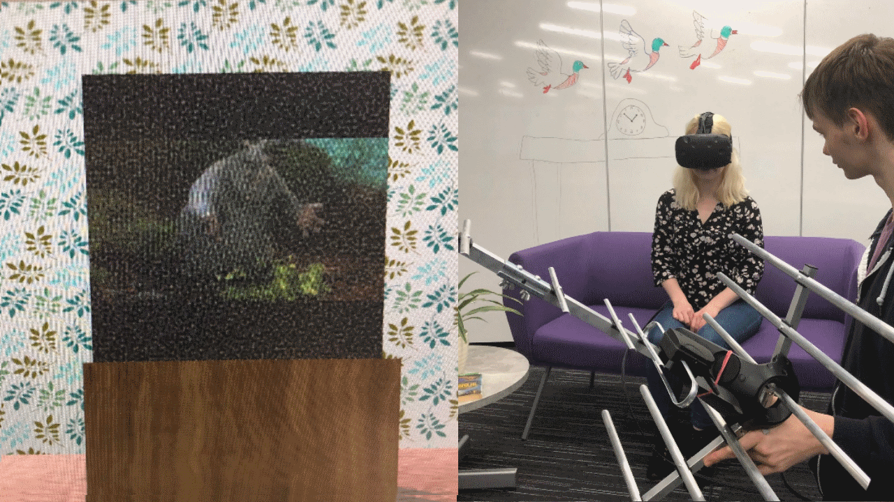
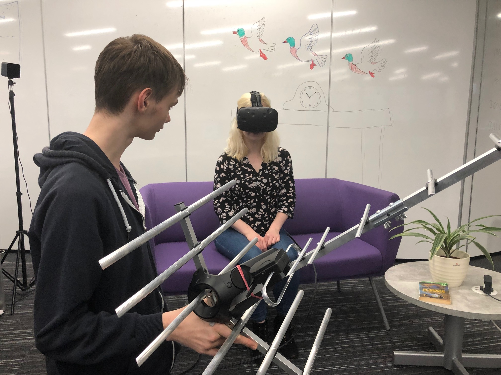

TV Aerial Simulator

This VR game allows young people to experience home life of the 1970s. While one player watches television, the other player has to adjust a TV aerial to keep the signal strong.
This was our entry to Global Game Jam 2019. View and download the game on the Global Game Jam website: https://globalgamejam.org/2019/games/tv-aerial-simulator
 


Credits
Gavin Wood - Game design and programming
John Rooksby - Game design and programming
Ryan Milner (rtm516) - Unity editor and programming guidance
NeverMoreScribe - For a logo in super quick time!
Ben Kirman - Programming and scene help
Tom Feltwell - additional help with GitHub etc.
Thank you to all the Game Jammers at Northumbria for their enthusiam, support and suggestions.
If you would like to cite this game please use: